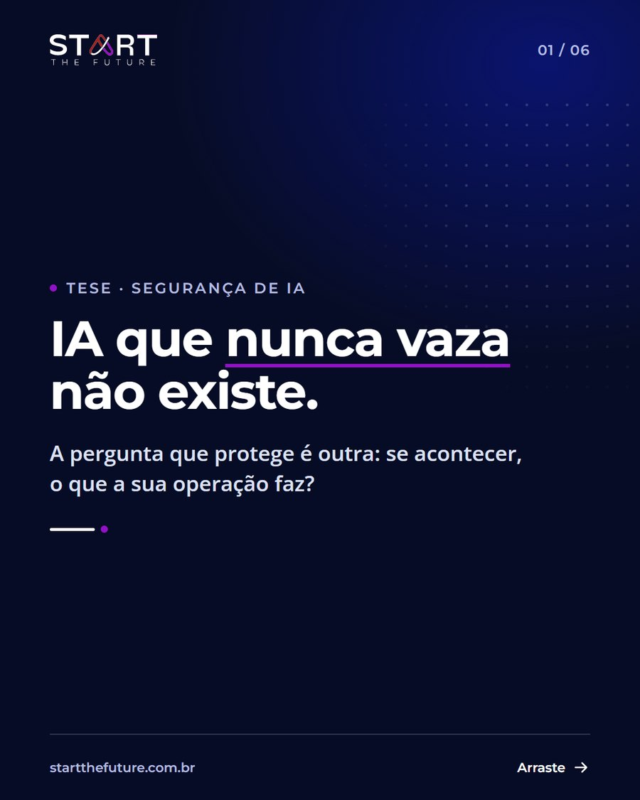
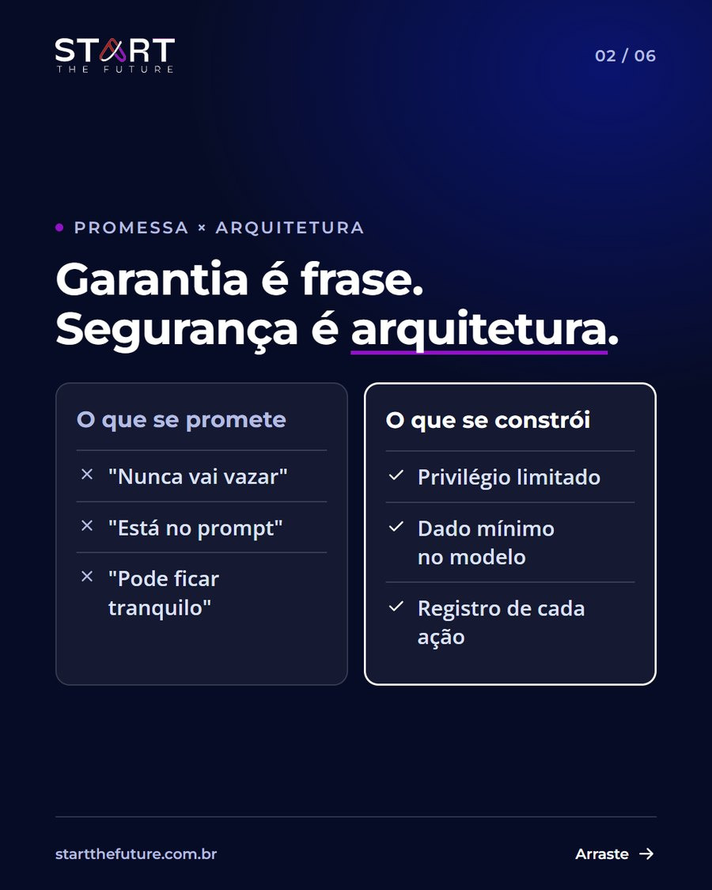
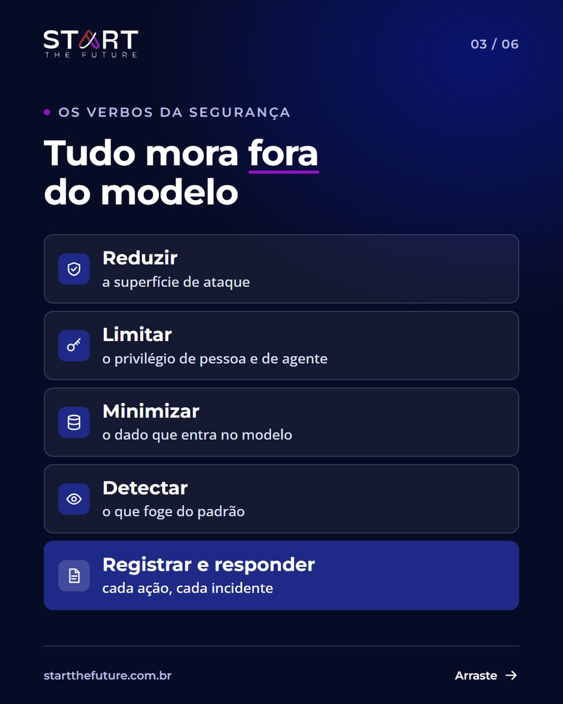
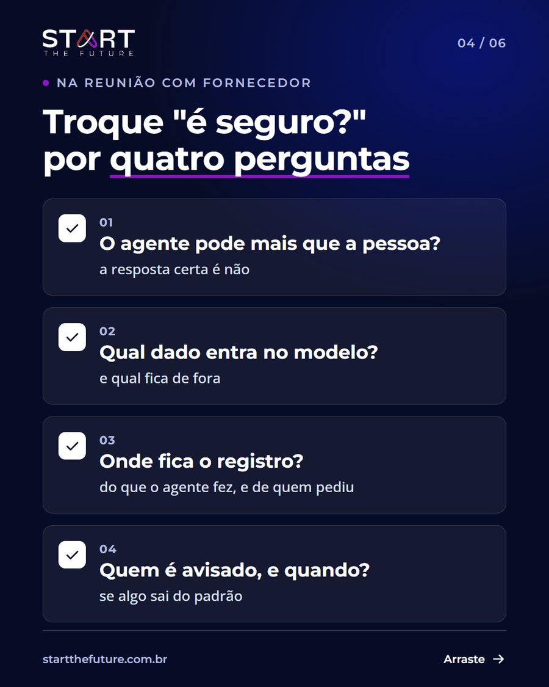
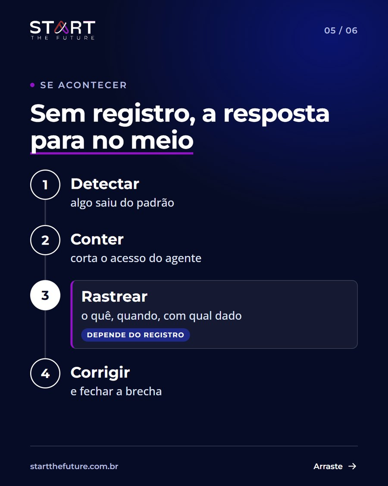
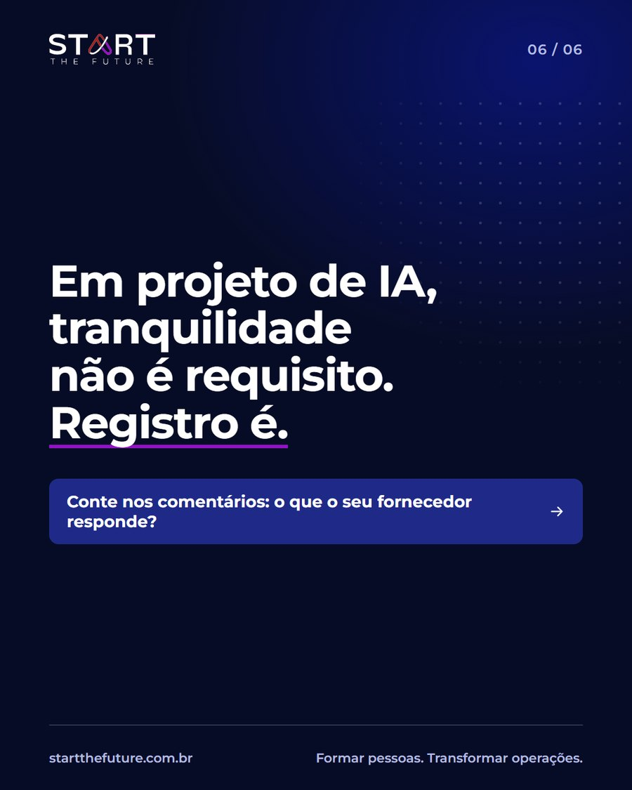

Sugestão 1
Quem garante que a IA nunca vai vazar dado está vendendo o que ninguém entrega: segurança de IA não é garantia, é arquitetura que se descreve em verbos, e a pergunta certa ao fornecedor é o que acontece quando algo sai do padrão.
Texto do LinkedIn
Quem garante que a IA nunca vai vazar dado está vendendo o que ninguém entrega.
Segurança absoluta não existe: nem em IA, nem em ERP, nem em banco.
A pergunta que protege a empresa é outra: se acontecer, o que a sua operação faz?
Ler o texto inteiro
Garantia é uma frase. Segurança é arquitetura, e arquitetura se descreve em verbos:
reduzir a superfície de ataque;
limitar o privilégio de cada pessoa e de cada agente;
minimizar o dado que entra no modelo;
prevenir o comportamento que já é conhecido;
detectar o que foge do padrão;
registrar cada ação;
responder ao incidente.
Nenhum desses verbos é "confiar no modelo". Todos moram fora e em volta dele.
Por isso, na reunião com fornecedor de IA, troque a pergunta "é seguro?" por quatro:
o agente pode mais do que a pessoa que o acionou?
qual dado entra no modelo, e qual fica de fora?
onde fica o registro do que o agente fez?
quem é avisado, e em quanto tempo, quando algo sai do padrão?
Quem responde às quatro está mostrando arquitetura. Quem responde "pode ficar tranquilo" está pedindo confiança.
Em projeto de IA, tranquilidade não é requisito. Registro é.
Legenda do Instagram
Quem garante que a IA nunca vai vazar dado está vendendo o que ninguém entrega.
Ler a legenda inteira
Segurança absoluta não existe: nem em IA, nem em ERP, nem em banco. A pergunta que protege a empresa é outra: se acontecer, o que a sua operação faz?
Garantia é uma frase. Segurança é arquitetura, e ela se descreve em verbos: reduzir a superfície de ataque, limitar o privilégio, minimizar o dado que entra no modelo, detectar o que foge do padrão, registrar cada ação e responder ao incidente.
Nenhum desses verbos é "confiar no modelo". Todos moram fora e em volta dele.
Na próxima reunião com fornecedor, troque "é seguro?" por quatro perguntas:
o agente pode mais do que a pessoa que o acionou?
qual dado entra no modelo?
onde fica o registro do que o agente fez?
quem é avisado quando algo sai do padrão?
Arraste para o lado e veja a arquitetura em camadas.
Em projeto de IA, tranquilidade não é requisito. Registro é. Você concorda? Conte nos comentários.
#inteligenciaartificial #segurancadainformacao #governancadeia #ciberseguranca